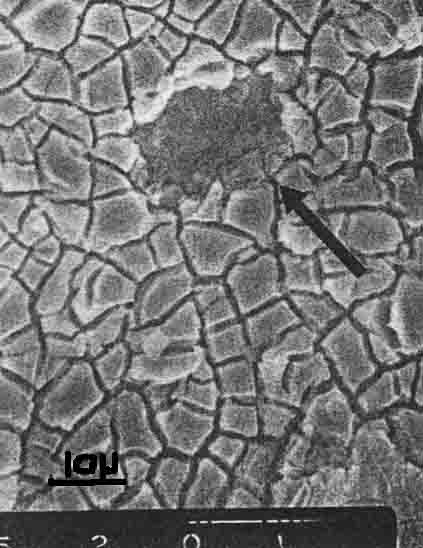
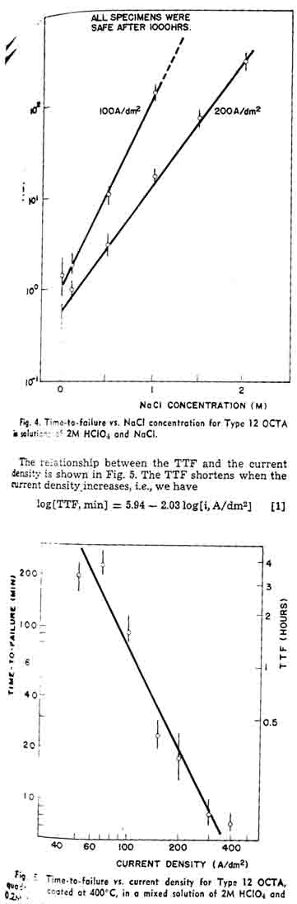
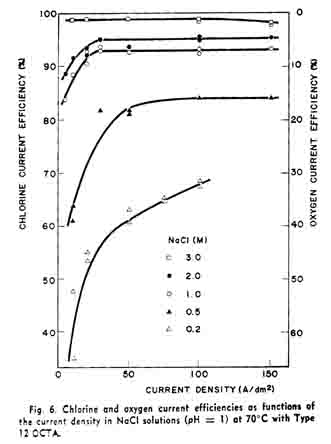

Polarization measurement and an accelerated life test of the oxide-coated titanium anodes in relatively dilute solutions of NaCl and in HClO4 solution were conducted. The OCTA failed at potentials higher than 1.3V vs. SCE, probably due to anodic oxidation of RuO2 and passivation of Ti substrate. An accelerated life test based on those results has been investigated to estimate the OCTA. The polarizing current decreases quickly when the OCTA becomes inactive, and the service life of material is evaluated by the time-to-failure from the start-up. |
A number of the oxide-coated titanium anodes (OCTA) consisting of RUO2 and Ti02 are being used because of durability and low chlorine overvoltage in chlor-alkali cells. But eventually the OCTA becomes inactive and a part of the oxide drops out (arrow in Fig. 1 Low oxygen overvoltage is another problem for this oxide anode in chlorine cells.
The OCTA is stable and its chlorine overvoltage is preferably low in concentrated NaCl solutions even at high current densities, whereas it is attacked gradually and the anode potential becomes high in dilute NaCl solutions.
Since the OCTA has come into the market in early 1970's, many articles on its preparation, modification, physico-chemical properties, electrochemical characteristics and applications have been published. Degradation and deactivation of its unique material have also been discussed. With those articles and patents, degradation of the OCTA in chlor-alkali cells can be classified into three types: (i) coating dissolution, (ii) substrate attack, and (iii) substrate oxidation leading to electrical insulation, as stated by Warren et al., who have studied the Pt-Ir alloy coated anodes for chlorate cells (1.2).
Extensive studies on the OCTA as well as the solid Ru metal anodes in sulfuric acid solution and solid polymer electrolyte have been conducted as a part of new developments in high-performance water electrolysis. Low oxygen overvoltage of those materials is a reason. However, dissolution and/or degradation of the anode material at high potential ranges, and hence at high current densities, is a problem (3).
Experiment of the OCTA under the operating conditions of chlorine cells are time-consuming, about one year or more for only one run. Consequently, this Paper deals mainly with an accelerated life test and its procedure for the OCTA. The procedure is simple and requires minimum labor even for a prolonged period. The test specimen of the OCTA is electrolyzed in a mixed solution of HClO4 and NaCl or in HC104 S1ngle solution under a constant terminal voltage, and the current is recorded until the test specimen breaks
down. The concept is based on gradual degradation of the active material due to oxygen evolution.
Test specimen:—Titanium sheet of 5 mm wide, about 150 mm long, and 0.5 mm thick was pickled with 10% oxalic acid at about 80°C for about 3 hr, rinsed
|
 |
| Fig. 1. SEM photograph of degraded surface OCTA |
|  |
|  |
with water, and dried. One end of the strip (1 cm2 area) was painted with a HC1 acidified butanol solution of ruthenium chloride and tetrabutyl titanate. Specimens prepared at lower than 350° C gave weak coating, on the other hand, the OCTA became inactive when it was heated at higher temperatures than 550°C. But the service lifetime was almost independent of the fire temperature in the range 350°-550°C, and the time of heating in the range from 5 min to 10 hr. Consequently, most specimens in this work were prepared at 400C in an electric furnace for 10 min.
Since the anode life depends on the thickness of the oxide layer, coating procedure was repeated four times to obtain an adequate specimen of 2.5-3.0 microns thick.
Type 12 OCTA (Ru/Ti mole ratio = 0.5) was mostly examined, where the type number refers to the mole ratio of Ru to Ti (see the previous report 4). Type 10 (Ru02 only) was used as reference in some cases, whereas its material was relatively weak compared to the mixed oxide such as Type 12.
Life test:—Six to twelve specimens were positioned parallel to a common graphite cathode plate in a large plastic cell of about 12 liters. A schematic diagram of the circuit for the accelerated life test is shown in Fig. 2. The terminal voltage of each specimen is first adjusted by respective variable resistance to maintain an adequate current load of an individual anode specimen, and the voltage is kept constant thereafter. The current under constant voltage is recorded until it changes significantly as shown in Fig. 3. Since the OCTA is strong, the current remains for many hours or days or months depending on the oxide material and the conditions of experiment, but the current decreases gradually, then quickly at the end of life. It is termed the "time-to-failure" or TTF. For example, Specimen A in Fig. 3 failed 3 hr earlier than Specimen B.
The electrolytic solution consisted of 2M HCl04 and NaCl in various concentrations. Single solutions of NaCl and HClO4 were also examined. All solutions were prepared with extra pure chemicals and doubly distilled water. The solution was circulated by a sealed pump to keep the solution composition uniform. The solution pH was also controlled. The electrolytic gas containing chlorine, hydrogen, and some oxygen was scrubbed with caustic soda solution and washed with water prior to purge in the atmosphere.
Preliminary experiment showed that no significant effect of the solution temperature on the TTF was found in the range 30°-70°C. For convenience sake, the temperature was not controlled, but the solution warmed at 35°-40°C during experiment due to the joule heat of electrolysis.
Polarization measurements:—The polarization me*, surement of the OCTA was carried out in a separate glass cell about 500 cm3 in volume. The countered-trode was a Pt foil of about 5 cm2 area. The potential was referred to a saturated calomel electrode (SCE)1 and the IR drop between the working anode and the Luggin probe was calibrated by the current interruption technique. Preparation of the specimen and the solution for the polarization measurement was essentially the same as of the life test. Experiment was carried out at 40°C in most cases.
Current efficiency measurements:—The OCTA specimen was covered by a glass hood located at the center of a glass cell approximately 500 cm3 in volune to receive the anode gas. The counter cathode was positioned at a corner of the cell. The anode gas was brought to a conventional gas analyzer. It was confirmed that the anode gas was a mixture of chlorine and oxygen depending on the solution composition, the oxide material, and the operating conditions such as current density. The current efficiencies for chlorine and oxygen were thus obtained. The current efficiencies were not affected much by the solution temperature (40°-70°C).
Figure 4 shows the TTF of the OCTA in the mixed solutions of 2M HClO4 and NaCl in various concentrations. Since the results deviated, the experiment was repeated several times, especially in dilute or free of NaCl solutions. It required a skill for preparation of the oxide coating to obtain reproducible results. The anode overvoltage of uncertain specimen became high after a relatively short period of electrolysis. C formation proceeds rather than chlorine evolution, and it degrades the OCTA. The TTF increases with the increase of the NaCl concentration, as shown in Fig. 4. It also shows that the larger the current density the shorter the TTF. At 100 A/dm2, none of the specimens examined failed after 1000 hr in the solution containing 1.5M NaCl.
Assume that extrapolation of the curve in Fig. 4 is applicable to more concentrated NaCl solutions. 4M NaCl, for example, the TTF is estimated to be 3.5 years at 100 A/dm2, or 2.5 years even at 200A/dm2 This is why we need to conduct an accelerated life test of the OCTA in weak NaCl solutions under relatively high current densities.
This experimental equation shows that the service lifetime of the OCTA is not a linear function of the ampere-hours, but the oxide coating is attacked seriously at high current densities.Figure 6 shows the current efficiency vs. current density curves in NaCl solutions of various concentrations. The ordinate of the left-hand side shows the chlorine current efficiency. The anode gas contained only chlorine and oxygen, and the total current efficiency was confirmed to be 100% with two gases. Consequently, the oxygen current efficiency is represented to be (100-C.E. for Ch)% as shown by the ordinate of the right-hand side. The chlorine current efficiency was low in dilute NaCl solution at low current densities, whereas the current efficiency was more than 98% in wide range of the current density when the NaCl concentration was higher than 3M. In 0.5M NaCl, for example, the chlorine current efficiency was some 80%. The chlorine current efficiency in alkaline solutions was found to decrease considerably whereas oxygen formation stimulated.
The polarization curves of the OCTA in various solutions are shown in Fig. 7. In concentrated NaCl solutions, the anode potential at relatively low current densities are low, but the anode potential rises quickly when the current density becomes high, for instance, at more than 300 A/dm2. These behaviors have been pointed out by some authors (5, 6). Such a current density at a given potential, at 1.25V vs. SCE for example, is proportional to the NaCl concentration. The top line shows the polarization curve in plain HClO4 solution where only oxygen forms. The polarization curve for the oxygen electrode process differs from that in solutions containing chloride of some extent because the chloride ions may occupy the active sites on the OCTA for the oxygen electrode process, retard charge transfer of water molecule to oxygen, and the overvoltage for oxygen formation thus increases. In dilute NaCl solutions, 0.1M NaCl for example, the OCTA polarizes significantly even at low current densities such as 10 A/dm2, and the oxygen formation reaction rate is comparable to the chlorine formation reaction.
Figure 8 shows the partial polarization curves for both chlorine and oxygen formation reactions in acidified 0.5M NaCl at 70°C. The over-all polarization was measured by the regular manner, using the galvano-static method. The gas volume, both chlorine and oxygen, was measured in parallel to determine the current efficiency, and the total current density was divided into the partial current densities for chlorine and oxygen. The partial polarization curves in this figure were thus obtained. The Tafel slope of the oxygen polarization curve is larger than that of the chloring curve especially at low current densities.
<snip><snip><snip>
HIT THE BACK BUTTON ON YOUR BROWSER